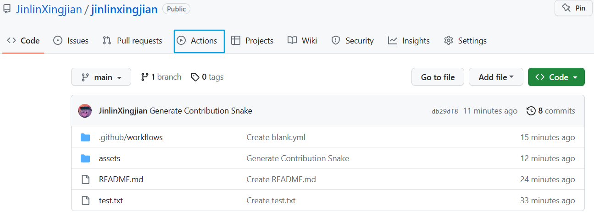
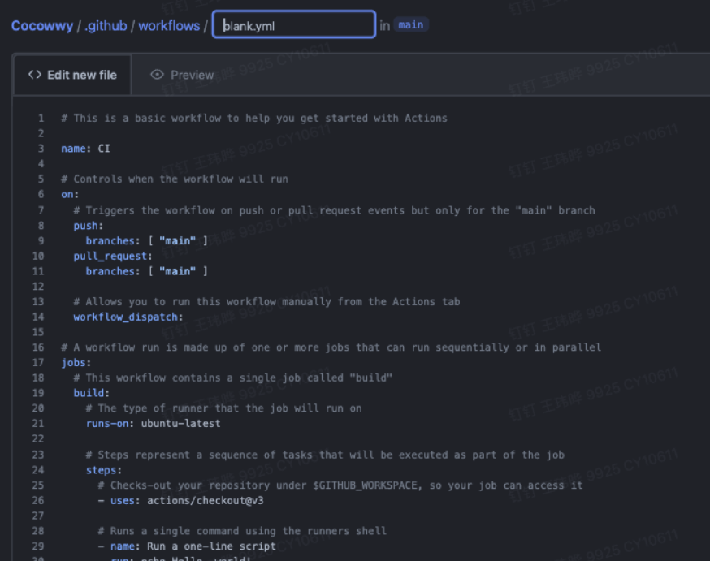

效果图
这是开发者大佬的github主页
教程
1.新建一个与你GitHub用户名同名的仓库
此步骤略
2.进入action
3.新建workflow
填入你的GitHub用户名

选择configure
4.填写代码
你应该会看到这个页面
去掉原来的所有内容，填入以下内容
# GitHub Action for generating a contribution graph with a snake eating your contributions.
name: Generate Snake
on:
schedule:
- cron: "0 0 * * *"
workflow_dispatch:
jobs:
build:
runs-on: ubuntu-latest
steps:
- name: Checkout
uses: actions/checkout@v2.3.4
- name: Generate Snake
uses: Platane/snk@master
id: snake-gif
with:
github_user_name: ${{ github.repository_owner }}
gif_out_path: ./assets/github-contribution-grid-snake.gif
svg_out_path: ./assets/github-contribution-grid-snake.svg
- name: Push to GitHub
uses: EndBug/add-and-commit@v7.2.1
with:
branch: main
message: 'Generate Contribution Snake'

5.运行
回到action页面，点击运行即可
6.为REDAME.md加上贪吃蛇图片
在你的仓库的REDAME.md文件中加入以下内容
7.成功
打赏
 wechat
wechat alipay
alipay
评论